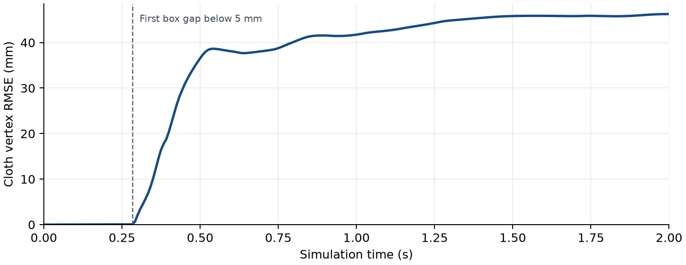
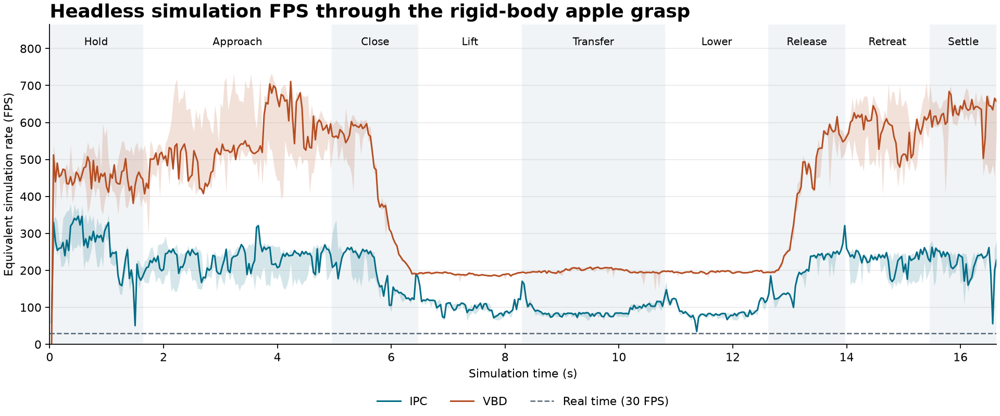
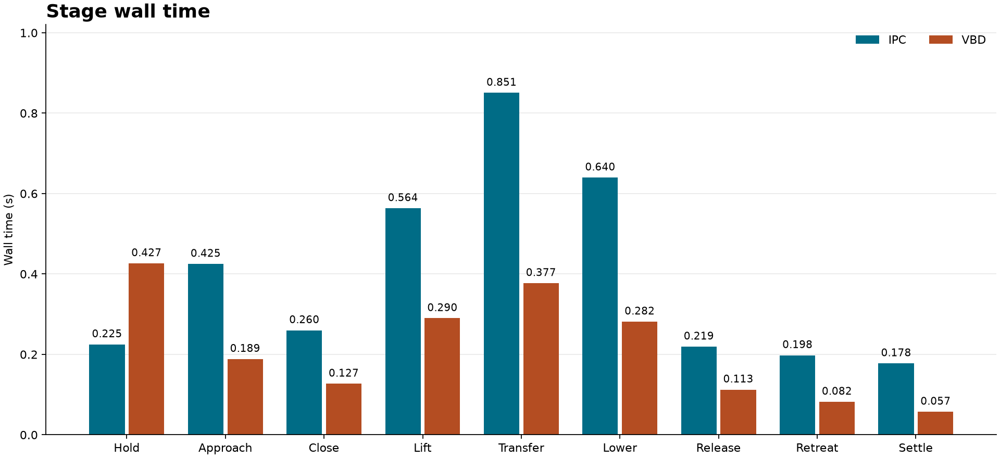
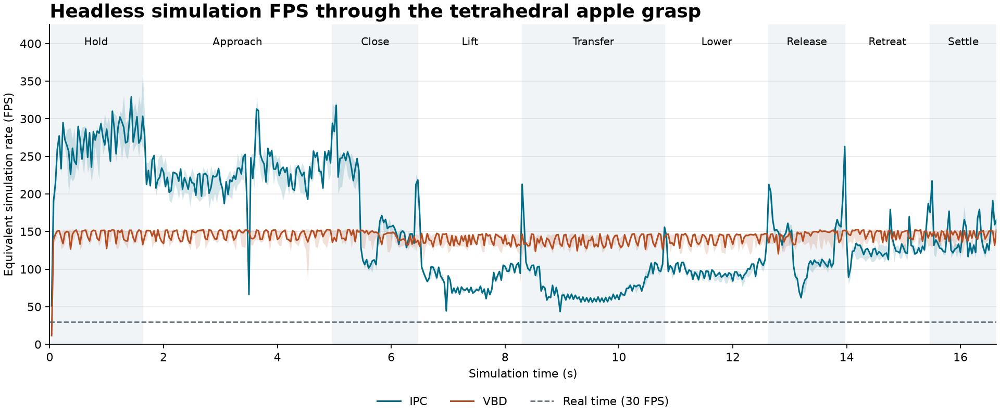
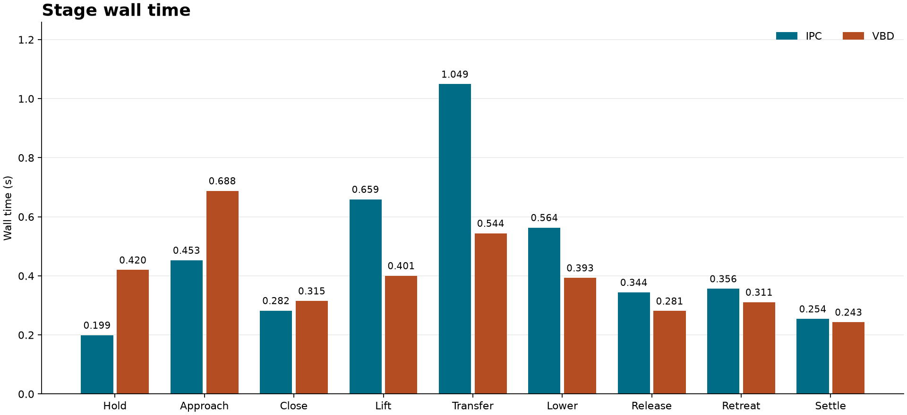

libuipc-warp is a rewrite of libuipc's Incremental Potential Contact (IPC) solver in NVIDIA Warp. It simulates frictional contact between deformable and affine bodies and keeps the main solve on the GPU to reduce CPU-GPU synchronization. It provides a pyuipc-compatible backend and a standalone Warp-array API.
uipc_warp.frontend.Engine() to the pyuipc World.ArrayScene and SimEngine. No pyuipc installation required.Newton owns the model, simulation state, and step schedule. At setup, SolverIPC converts the model geometry, materials, and collision filters to ArrayScene and creates the Warp IPC engine.
flowchart LR
Inputs["Newton
state_in, controls, dt"]
Adapter["SolverIPC
Map inputs to engine arrays"]
Solve["Warp IPC on GPU
Detect contacts and solve"]
Output["SolverIPC
Write GPU state_out"]
Inputs --> Adapter -->|"engine.advance(dt)"| Solve --> Output
state_out directly on the GPU.SolverIPC.step() to record this data path and the solve in Newton's graph. Replay runs the recorded GPU work without another Python call to SolverIPC.step().check_status() after replay to read status flags. See Whole-step CUDA Graph for the device loops and buffer overflow handling.
flowchart LR
subgraph CPU["CPU (FrameRunner)"]
direction TB
Launch["Capture if needed, then launch"]
Status{"Check status: buffer overflow?"}
Retry["Allocate larger buffers
and restore step-start state"]
Done["Finish and return status"]
Launch -.->|"Wait for GPU status"| Status
Status -->|No overflow| Done
Status -->|Overflow| Retry
Retry -->|"Recapture and retry same step"| Launch
end
subgraph GPU["GPU (captured step)"]
direction TB
Predict["Predict motion and prepare contacts"]
Newton{"Continue Newton?"}
Iteration["Assemble and run conditional PCG
Apply CCD/CFL bounds and line search"]
Finish["Finish step and write status"]
Predict --> Newton
Newton -->|Yes| Iteration --> Newton
Newton -->|No| Finish
end
CPU <-->|"Launch to GPU
Status back to CPU"| GPU
FrameRunner replays the graph with one launch per attempt.wp.capture_while for Newton, PCG, and backtracking, and wp.capture_if for branches such as re-running collision detection. The same graph can take different paths on different steps.FrameRunner then grows the buffers, restores the step-start state, and recaptures and retries the same step.Newton cloth_ipc scene: a 32-cell cloth grid, 1,089 cloth vertices, four boxes, and two simulation substeps per frame at dt = 1/120 s. The saved libuipc fixture matched a fresh Warp scene export array for array. Left: optimized libuipc rendered with Polyscope. Right: libuipc-warp.
Scene scale. The cloth is 1.44 × 1.44 m, with 45 mm between neighboring grid vertices at rest. It starts 0.90 m above the ground and 0.392 m above the tallest box top. The four boxes measure 0.50 × 0.50 × 0.30 m, 0.20 × 0.20 × 0.20 m, 0.24 × 0.60 × 0.16 m, and 0.20 × 0.20 × 0.40 m in local coordinates.
world.sync() for libuipc and wp.synchronize_device() for Warp. Rendering and trajectory export run outside the timed benchmark.linear_system/use_cuda_graph=0.56ff670, libuipc-warp f70954b, Warp 1.20.0.dev20261117.| Configuration | Trial means (ms/frame) | Mean (ms/frame) | Median (ms/frame) | P95 (ms/frame) |
|---|---|---|---|---|
| libuipc-warp, substep Graph enabled | 7.25 / 6.58 / 6.32 | 6.72 | 4.75 | 14.30 |
| libuipc-warp, CUDA Graph disabled | 71.85 / 64.70 / 63.54 | 66.70 | 48.71 | 156.18 |
| libuipc, CUDA Graph disabled | 90.96 / 93.85 / 92.85 | 92.55 | 63.86 | 198.99 |
linear_system/use_cuda_graph=0) to provide a baseline with CUDA Graph disabled in both backends.
The same scene ran for 120 frames (2.00 s) with CUDA Graph disabled in libuipc and the substep Graph enabled in libuipc-warp. We compared the world-space positions of all 1,089 corresponding cloth vertices at each of the 240 substep boundaries. The initial positions matched. These metrics measure agreement between the two trajectories.

| Cloth vertex metric | Value | Share of 1.44 m cloth width |
|---|---|---|
| RMSE over all vertices and substeps | 38.25 mm | 2.66% |
| Peak single-vertex deviation | 225.54 mm at 1.658 s | 15.66% |
| Final-frame RMSE | 46.25 mm at 2.00 s | 3.21% |
The final-frame RMSE is about one rest-grid spacing (45 mm). The peak single-vertex deviation slightly exceeds the width of the 200 mm cube.
The trajectories begin to diverge as the cloth enters the box contact range. The dashed line marks 0.283 s, when both runs first measured a cloth vertex less than 5 mm from a box surface. The 5 mm threshold comes from the scene's IPC barrier activation distance (d_hat = 0.005 m). It marks the onset of contact proximity before the surfaces touch.
At the sampled substep boundaries, the minimum cloth-vertex clearance to the boxes was 2.60 mm in libuipc and 1.65 mm in libuipc-warp. The minimum clearance to the ground was 2.36 mm and 1.97 mm, respectively. No cloth triangle intersected a box and no cloth vertex penetrated the ground at the sampled states.
Two apple-grasp scenes compare Newton's libuipc-warp IPC backend with the VBD solver. Both solvers use CUDA Graph. The first case uses a rigid apple; the second uses a tetrahedral deformable apple.
A four-finger robot hand approaches a rigid apple resting on a horizontal tabletop. The hand's rigid links follow a prescribed motion to close around the apple, lift it, carry it across the table, and lower it before releasing and retreating. The apple moves freely under gravity and contact forces and settles on the fixed tabletop. Its collision shape is a convex hull, and the tabletop is a static plane.

For each computed frame, equivalent FPS is 1,000 divided by its synchronized latency in milliseconds. Lines show the median across three runs, and the bands show the minimum and maximum. The horizontal axis is simulated time at the end of the frame. The 30 FPS line marks real time.
After the first computed frame, the median of the per-frame rates was 191 FPS for IPC and 439 FPS for VBD. Counts of frames below 30 FPS in the three runs were 0, 1, 1 for IPC and 1, 1, 1 for VBD.
VBD slows as the fingers close and recovers when they release. Its stage median drops from 530 FPS in Approach to 190–198 FPS across Lift, Transfer and Lower, then rises to 466 FPS in Release. A separate diagnostic recorded zero finger–apple contact records per substep in Approach and medians of 95–103 while the apple was held. VBD still runs 20 sweeps per substep. Each sweep accumulates contact forces and Hessians and updates contact multipliers for the rigid-body contacts. The grasp therefore increases the work per sweep until the fingers disengage.
IPC slows over the same contact interval. It falls from 239 FPS in Approach to 84 FPS in Transfer and recovers to 200 FPS in Release. The active grasp introduces barrier and friction terms into the coupled rigid-body system. In a separate solver diagnostic, the mean total number of PCG iterations per substep rose from about 2 in Approach to 69–71 in Transfer and Lower, then fell to 18 in Release. IPC therefore spends more work on each substep while maintaining the grasp.

Each bar shows the median sum of frame wall times for that stage across three runs, with the GPU synchronized after every output frame. VBD spent less wall time in approach, close, lift, transfer, lower, release, retreat, settle. IPC spent less wall time in hold. The largest absolute difference was during transfer at 0.473 s.
The hold stage includes the first computed frame and its solver initialization. First-frame wall time ranged from 220 to 338 ms for VBD and 15 to 35 ms for IPC.
After one warm-up per solver, three IPC–VBD pairs ran with GPU synchronization at the start and end of each run. Wall time includes solver setup performed during the run. RTF is 16.633 seconds of simulated time divided by wall time.
| Alternating pair | IPC wall time (s) | VBD wall time (s) | IPC RTF | VBD RTF |
|---|---|---|---|---|
| 1 | 3.499 | 1.759 | 4.75× | 9.46× |
| 2 | 3.650 | 1.777 | 4.56× | 9.36× |
| 3 | 3.617 | 1.798 | 4.60× | 9.25× |
| Median | 3.617 | 1.777 | 4.60× | 9.36× |
Peak penetration was measured at each 1/120 s substep boundary. Values are the median and range across three runs.
| Contact pair | Limit (mm) | IPC (mm) | VBD (mm) |
|---|---|---|---|
| Fingertip–apple | 0.50 | None detected | 6.622 (6.618–6.630) |
| Apple–table | 0.10 | None detected | None detected |
VBD exceeded the fingertip penetration limit in all three runs. Penetration is measured on the original collision geometry using fingertip vertices inside the apple hull and apple vertices below the tabletop plane. The metric can miss edge-only intersections and peaks between substeps. Contact offsets and stiffness can affect the measured overlap. Evaluating contact fidelity also requires checking surface separation during intended contact. Numerical error requires comparison with a reference solution for the same model.
Both configurations completed the grasp, transfer and settling in all three runs. These metrics describe grasp stability and placement for the tested scene.
| Metric | Task limit (mm) | IPC (mm) | VBD (mm) |
|---|---|---|---|
| Peak apple drift relative to the palm | 3.00 | 1.291 | 1.297 (1.293–1.301) |
| Final horizontal placement error | 5.00 | 1.332 | 3.669 (3.580–3.734) |
Drift is the maximum displacement of the apple's center of mass in the palm frame, from the end of closure through lowering. Placement error is the final horizontal distance from the apple's center of mass to the target at (0.45 m, 0 m).
A four-finger rigid hand follows a prescribed trajectory to pick up a free tetrahedral apple, carry it across a fixed tabletop and release it. The apple deforms under contact and gravity. Both videos use the same camera, 1280 × 720 resolution and 30 FPS playback.
| Input | Shared value |
|---|---|
| Rest geometry | Ellipsoid with semiaxes 39.5, 39.5 and 36 mm |
| Mesh | 163 nodes, 320 positively oriented tetrahedra, 320 surface triangles |
| Density and mass | 820 kg/m³, 0.1864 kg |
| FEM material inputs | Stable Neo-Hookean Lamé inputs μ = 15 kPa and λ = 30 kPa, zero constitutive damping |
| Time discretization | 30 Hz output, four substeps per interval, 1/120 s physics step |
| Duration | 500 stored frames including the initial state, 1,996 solved substeps |
| Gravity and table | 9.81 m/s² downward, fixed plane at z = 0 |
| Initial apple height | Center at z = 40 mm, lowest rest vertex at z = 4 mm |
| Hand motion | Identical prescribed pose targets for all 17 rigid links |
| Pair sliding friction | 0.80 fingertip–apple, 0.45 apple–table |
| Nominal soft contact offset | 3 mm IPC FEM thickness and 3 mm VBD particle contact radius |
The initial particle positions, masses, connectivity, material arrays, gravity and hand targets were checked for exact equality. Shape friction inputs account for arithmetic mixing in IPC and geometric mixing in VBD. The common 3 mm offset allowed the VBD case to retain the apple through transfer. The initial center was raised to keep the surface outside the IPC thickness at initialization.
Headless on CUDA device 0, NVIDIA RTX PRO 5000 Blackwell Generation Laptop GPU, 595.71. Windows 11, Python 3.12.16, Newton 1.9.0.dev0, Warp 1.20.0.dev20261117 and libuipc-warp 0.4.4.dev0.

FPS is the reciprocal of synchronized frame wall time. Curves show the median across three runs, with min–max bands. The 30 FPS line marks real time. Frame timings exclude diagnostic readback and geometry checks. After the first computed frame, the median of the per-frame curves was 128 FPS for IPC and 145 FPS for VBD. Counts of frames below 30 FPS were 0, 0, 0 for IPC and 1, 1, 1 for VBD.
VBD shows little change as finger–apple contact forms. The stage median goes from 150 FPS in Approach to 146 FPS in Close and 141 FPS in Lift. Each frame runs four substeps with 20 sweeps each, and every sweep updates the same 163 FEM nodes and 320 tetrahedra, including before the fingers touch. The kinematic hand contacts the deformable apple through particle–shape records. In a separate diagnostic, the median finger–apple count went from zero in Approach to about 30 per substep during the grasp. The measured solve and collision time per substep increased only from 1.64 ms in Approach to 1.70 ms in Lift. The mesh updates provide a substantial baseline, and the added contact work is small relative to it in this scene.
IPC varied from 272 FPS in Hold to 67 FPS in Transfer, then recovered to 96 FPS in Lower and 133 FPS in Settle. IPC uses a convergence-driven Newton solve. Each Newton iteration assembles the coupled FEM and contact system, computes a direction with preconditioned conjugate gradients (PCG), and uses continuous collision detection and backtracking to select a step. The number of iterations and the work per iteration vary with the contact configuration.
A separate run recorded IPC counters for all 1,996 substeps. The median substep went from 2 Newton iterations, 4 total PCG iterations and 2 line-search trials in Approach to 4, 105 and 5 in Transfer, then to 3, 72 and 3 in Lower. Median reported mesh contact candidates also rose from 0 in Approach to 426 in Transfer and fell to 349 in Lower. These counts show why IPC spends more time per frame while carrying the apple and why it speeds up during lowering.

Bars show the median sum of synchronized frame times within each stage. VBD took less time in 6 of 9 stages. The largest absolute difference was 0.505 s during transfer, where VBD took less time.
After one warm-up per solver, three IPC–VBD pairs ran from fresh scenes. The GPU was synchronized at the start and end of each run. Wall time includes solver setup performed during the run and excludes rendering and diagnostic readback. RTF is 16.633 simulated seconds divided by elapsed wall time.
| Pair | IPC wall time (s) | VBD wall time (s) | IPC RTF | VBD RTF |
|---|---|---|---|---|
| 1 | 4.235 | 3.542 | 3.93× | 4.70× |
| 2 | 4.115 | 3.552 | 4.04× | 4.68× |
| 3 | 4.123 | 3.597 | 4.03× | 4.62× |
| Median | 4.123 | 3.552 | 4.03× | 4.68× |
Three separate IPC–VBD pairs sampled the original meshes at every 1/120 s substep boundary. Values are the median and range of each run's peak, in millimeters.
| Contact pair | Reference limit (mm) | IPC (mm) | VBD (mm) |
|---|---|---|---|
| Fingertip–apple | 0.50 | None detected | 1.538 (1.538–1.538) |
| Apple–table | 0.10 | None detected | None detected |
The largest VBD fingertip overlap was 1.538 mm during release at 12.742 s (fingertip). The peak from the end of closure through lowering was 1.475 mm. Fingertip penetration measures the nearest surface distance for fingertip vertices inside the deformed apple, using winding classification and the simulated fingertip transforms. Table penetration measures apple vertices below the plane. These samples can miss edge-only intersections and between-substep peaks. Each configuration passed the case's grasp and settling checks. The penetration data describe the tested contact configurations.
| Metric | IPC | VBD |
|---|---|---|
| Lift (mm) | 216.887 | 216.727 |
| Horizontal travel (mm) | 449.684 | 449.812 |
| Horizontal placement error (mm) | 2.604 | 1.655 |
| Final lowest vertex above the tabletop (mm) | 3.853 | 2.999 |
| Final center speed RMS (mm/s) | 9.167 | 8.127 |
| Minimum sampled tetrahedron volume fraction | 0.654 | 0.730 |
| Peak sampled per-element volume change (%) | 34.614 | 26.976 |
Volume statistics use all tetrahedra at each 30 Hz output frame. Each solver passed the same checks for pickup, horizontal transfer, fingertip proximity at lift and transfer, final placement and settling. All sampled tetrahedral volumes stayed positive.